Local fake-Mongo screenshots; desktop 1440×1000 and phone 390×844. No live Telegram authentication or deployment.
“product-oriented usage metrics and analytics” · “allows view for authenticated via telegram bot owner”
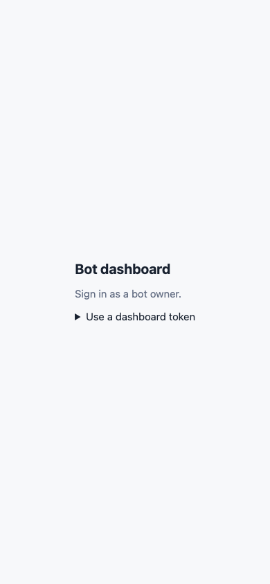
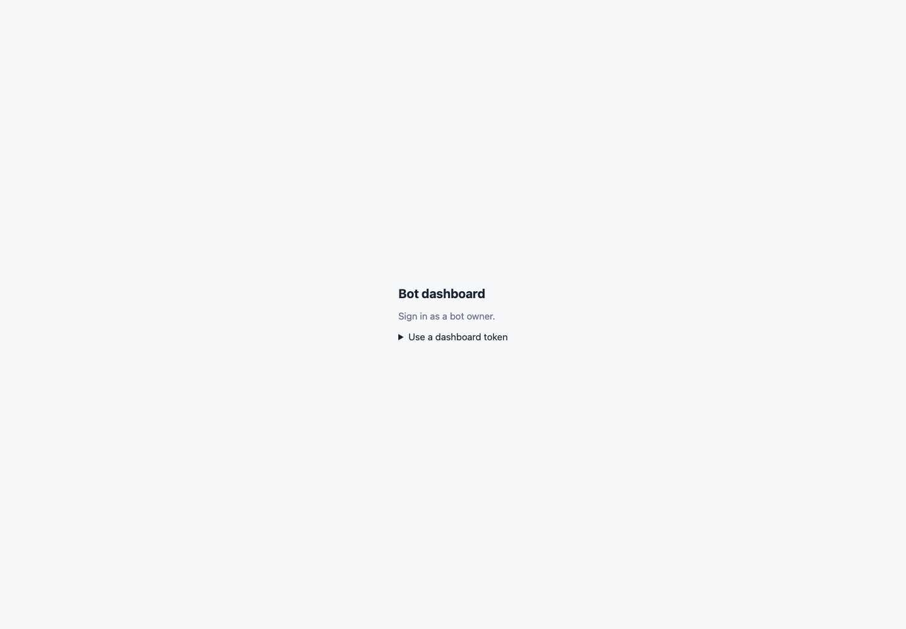
Owner sign-in with Telegram entry points and a folded token fallback.
Open the dashboard link.
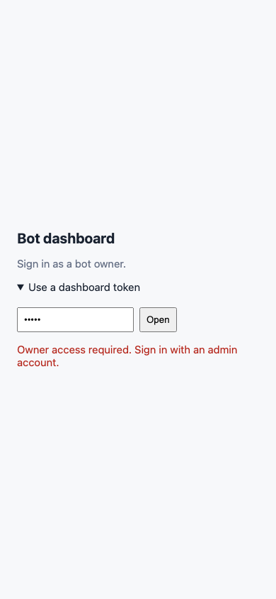
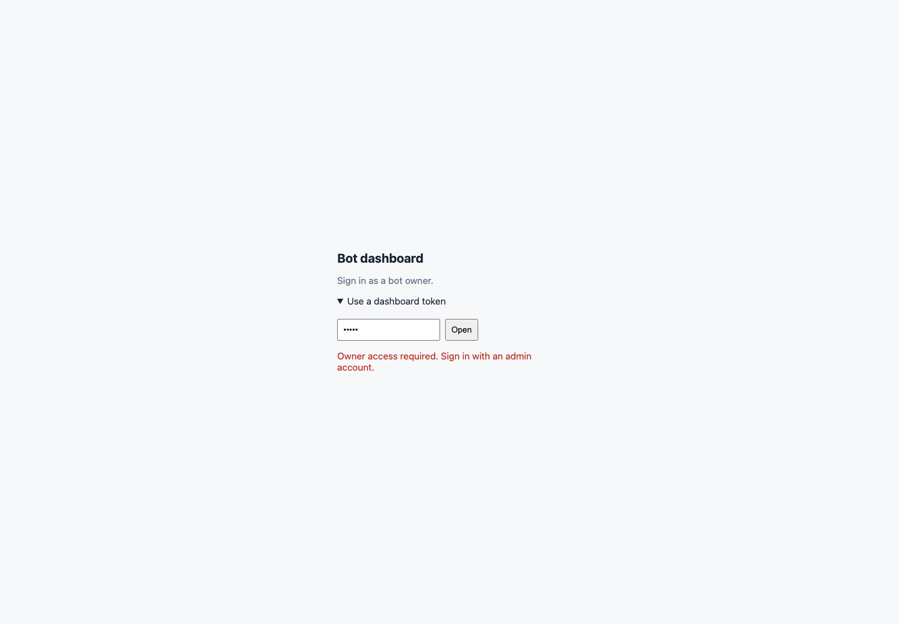
Wrong token gives an explicit error; the local token opens the signed session.
Open the token fold, enter local, tap Open.
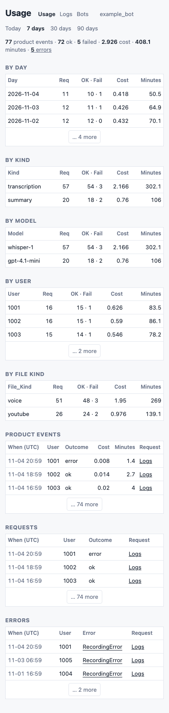
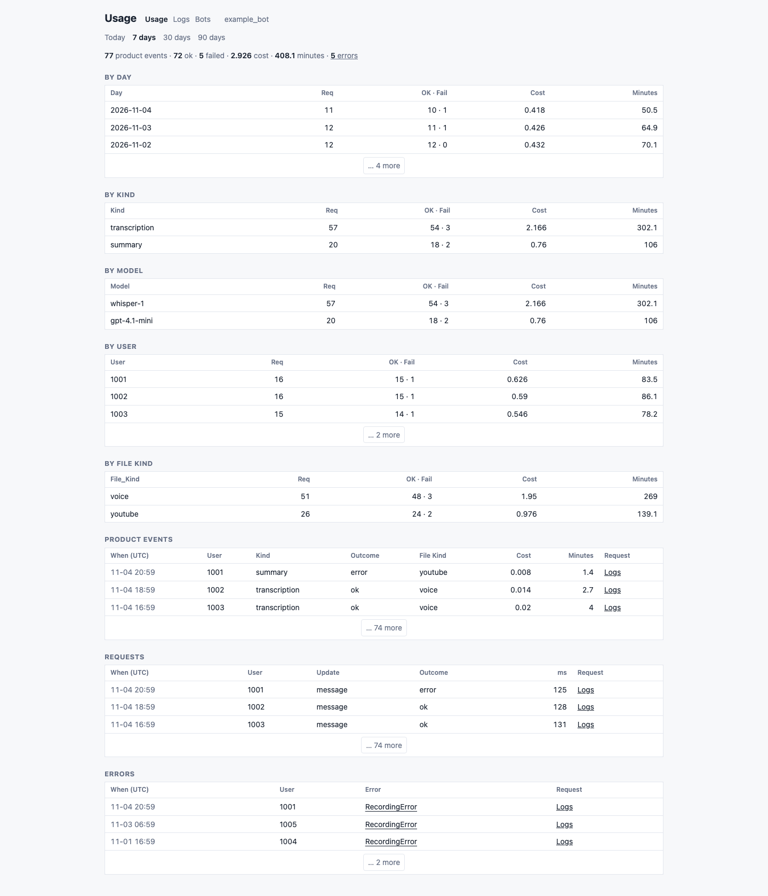
77 product events, newest UTC days first, optional product columns and folded rows.
Tap a range or a column to sort.
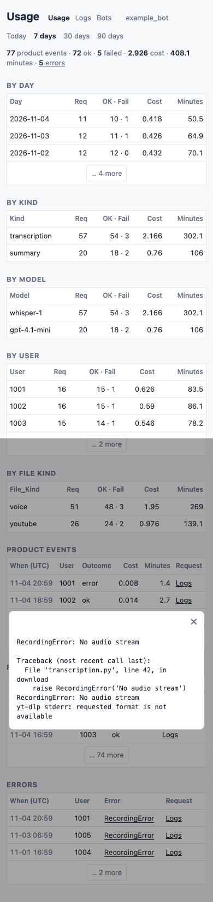
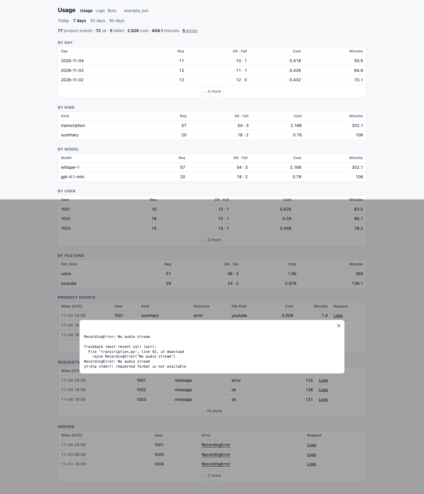
Error count links to Errors; traceback includes the download failure.
Tap RecordingError, close with × or Esc.
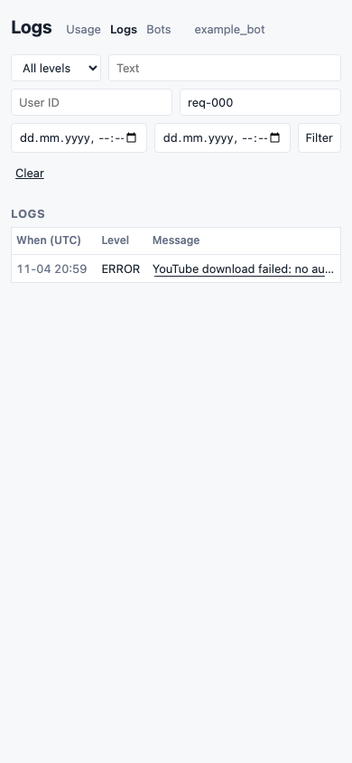
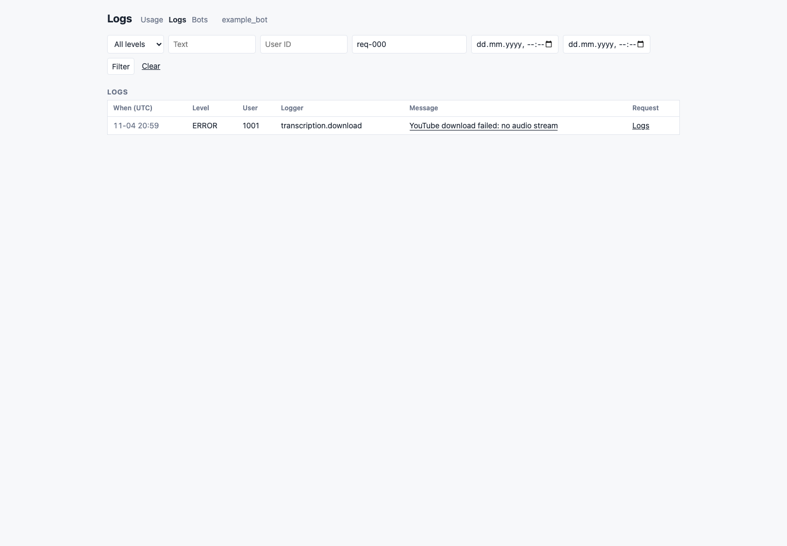
Only records with this request ID; same bot navigation stays visible.
Tap Logs in the error/request row.
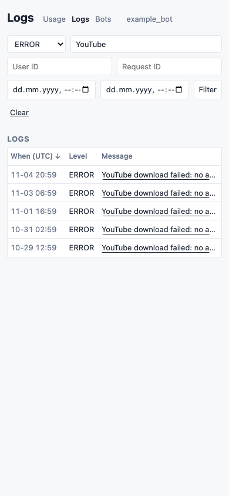
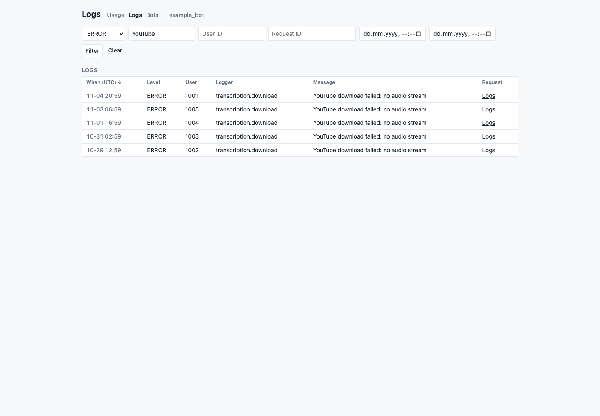
ERROR logs containing YouTube, sortable timestamps and expandable rows.
Clear, choose ERROR, type YouTube, tap Filter.
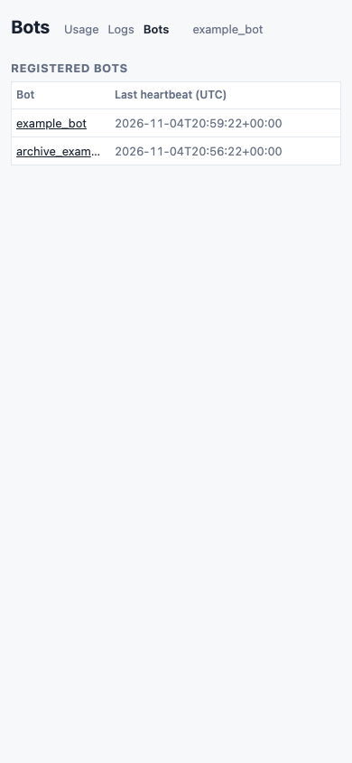
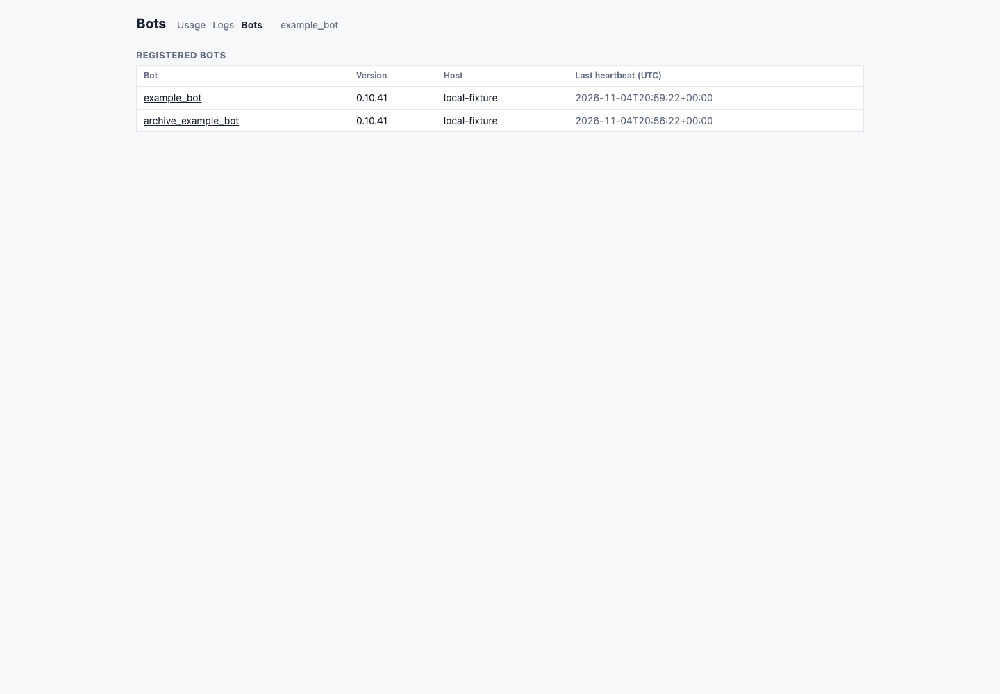
Two bots sharing the verified/configured owner; an outsider stays hidden.
Tap Bots, then Usage, then Today.
Live Telegram login/Mini App/menu behavior, real Mongo TTL/query plans and 500 ms target, physical devices, consumer adoption and deployment.
Reproduce with serve.py and capture.py; assertions in evidence.json, full details in README.md.